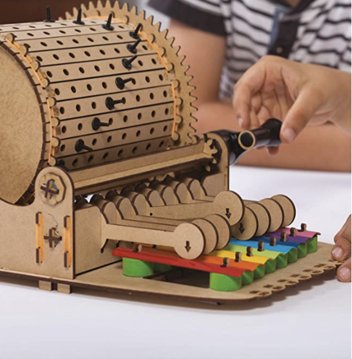

Girl Scout Name:
Girl Scout Badge: NAME
Girls must complete one activity from each of the 5 Steps of the badge.
1. Find out how programmers use computational thinking to solve problems
March 2, 2022 - March 14, 2022
Computational thinking is a way of thinking about things step-by-step. When you use computational thinking, you break things down and think about the problem in small parts. It’s sort of like thinking about doing something like you were programming a computer to do it. (https://en.wikipedia.org/wiki/Computational_thinking)
For example, let’s think about making a sandwich. If you thought about how to make one and don’t use computational thinking, you lose a lot of precision and aren’t as specific about what to do. Here’s what it might look like if you wrote out how to make a sandwich without thinking computationally:
1. Get a slice of bread out of a bag.
2. Spread peanut butter on it.
3. Spread jelly on it.
4. Put another slice of bread on it.
Also, look at this video to see some people making PB&Js without thinking computationally.
So, you can see that it is harder and more tedious to think about something computationally, but it pays off when the task is done correctly.
There are 4 parts to computational thinking: decomposition, pattern recognition, generalization, and algorithms.
Decomposition
“Decomposition in computer science, also known as factoring, is breaking a complex problem or system into parts that are easier to conceive, understand, program, and maintain.” (https://en.wikipedia.org/wiki/Decomposition_(computer_science))
We can decompose the process of making a PB&J into these steps:
1. Untie the bread bag.
2. Reach in and pull out one slice of bread.
3. Set the bread down.
4. Open a jar of peanut butter by twisting the lid to the left.
5. Pick a butter knife up.
6. Hold the handle of the knife.
7. Scoop peanut butter out of the jar with the blade of the knife.
8. Spread the peanut butter that is on the blade of the knife on the slice of bread.
9. Put the butter knife down.
10. Open a jar of jelly by twisting the lid to the left.
11. Pick a butter knife up.
12. Hold the handle of the knife.
13. Scoop jelly out of the jar with the blade of the knife.
14. Spread the jelly that is on the blade of the knife on the peanut butter.
15. Reach in the bread bag and pull out one slice of bread.
16. Set the bread down on top of the jelly.
These steps have to be precise, or the result might not turn out the way you want it to.
Pattern recognition
“Pattern recognition is the automated recognition of patterns and regularities in data."(https://en.wikipedia.org/wiki/Pattern_recognition)
If we adapt our process for making a PB&J, called an algorithm, we find that we can use it to make different types of sandwiches, like ham and cheese or pickle and mayonnaise. We can recognize a pattern between all of these different algorithms: we use bread, have some sort of condiments, and all of the ingredients are stacked on top of one another.
When we make an algorithm that describes how to make a sandwich, there are usually some things in common that we use. These things that we manipulate are called data. In the PB&J example, the data is the bread, peanut butter, jelly, butter knife, and jars. (Remember, just because the knife and jars don’t go into the sandwich doesn’t mean they’re not used!)
Generalization
“Generalization can also be used to refer to the process of identifying the parts of a whole, as belonging to the whole.” (https://en.wikipedia.org/wiki/Generalization)
This definition can be a bit tricky, so think about it this way: a generalization of something is the group it belongs to. For example, “sandwich” is a generalization on both “PB&J” and “ham and cheese sandwich”. Also, “condiment” is the generalization of both “peanut butter” and “jelly”.
Now that we know the steps that are used when making any kind of sandwich, and some data that is usually used, we can start to generalize. Here’s a generalization of how to make a sandwich:
1. Untie the bread bag.
2. Reach in and pull out one slice of bread.
3. Set the bread down.
4. Open the container of a condiment.
5. Put the condiment on top of the bread or preceding condiment.
6. Continue until all condiments are used.
7. Reach in and pull out one slice of bread.
8. Set the bread down on top of the last condiment.
We turn “peanut butter” and “jelly” into “condiment” when we generalize it, because peanut butter and jelly are types of condiments.
This is a pretty general algorithm that describes how to make any type of sandwich. This is not as general as it could be, but still pretty simple.
Algorithm
“In mathematics and computer science, an algorithm...is a finite sequence of well defined, computer-implementable instructions, typically to solve a class of specific problems or to perform a computation.” (https://en.wikipedia.org/wiki/Algorithm)
In other words, it’s a really specific list of things you have to do to get a certain result.
The last algorithm we wrote was a pretty good example of one you would use when telling someone who has no idea how to make a sandwich how to make one (an alien, perhaps). We could generalize this even further, like if we wanted to make a breakfast sandwich with pancakes instead of bread, or a pita wrap by putting chicken and vegetables inside an opened slice of pita bread. (A pita wrap is a sandwich, right?)
So, now you can use this algorithm to make a sandwich to test it. But make sure you follow it like a computer, and look for exceptions - you might find something that isn’t specific enough. Try to act like the people in the YouTube video that you saw earlier.
2A. Do 3 computational thinking activities: categorize various objects as “Computer” or “Not a Computer” to explore the four tasks that define a computer,...
March 22, 2022
A computer is a digital electronic machine that can be programmed to carry out sequences of arithmetic or logical operations (computation) automatically (https://en.wikipedia.org/wiki/Computer). A computer must have both a CPU (central processing unit) and a memory. Let's sort a list of things into the groups COMPUTER and NOT A COMPUTER.Laptop (computer)
- digital electronic machine
- programmable
- CPU
- Memory
Radio (not a computer)
- electronic machine
Cellphone (computer)
- digital electronic machine
- programmable
- CPU
- Memory
Music machine (not a computer)
- machine
- programmable
- memory
Pop-up toaster oven (not a computer)
- electronic machine
- programmable
Automobile (not a computer)
- machine (this could be electronic if you have a battery-powered car)
Broom (not a computer)
- Brooms are stupid and are not even machines. 🧹
Calculator (computer)
- digital electronic machine
- programmable
- CPU
- Memory
Smartwatch (computer)
- digital electronic machine
- programmable
- CPU
- Memory
Wheelbarrow (not a computer)
- machine (but very basic)
Bicycle (not a computer)
- machine (may be electronic if you have a battery-powered bicycle)
- programmable (does a gearshift count?)
- Memory (see above comment)
Electric razor (computer)
- electronic machine
2B. ...create a card-sorting algorithm to learn about processing, and...
March 27, 2022
I read chapters 1 and 2 of Grokking Algorithms by Aditya Y. Bhargava.Bibliography
Aditya Y. Bhargava. Grokking Algorithms: An illustrated guide for programmers and other curious people. Manning Publications Co., 2016.2C. ...design technology that willl best meet a user’s needs using user-centered design.
May 19 - May 20, 2022
-- Will take a class with TechGirlz about user-centered design --3. Plan a Take Action project that helps others.
DATE
DESCRIPTION
I chose this badge because...
I didn't actually choose this badge. My mom said I could do the Archery badge if I did this. If you want to read about something actually fun, check out my Archery page.
My favority activity was...
---
This badge taught me about...
This badge taught me what user-centered design is, how to implement it, what some different card-sorting algorithms are, and which is the most efficient.
The activities for this badge fit under these parts of the Girl Scout Law...
- ???